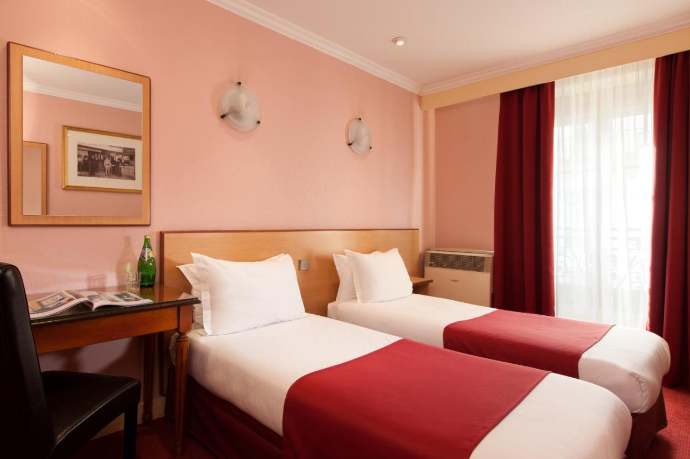

Kihagyhatatlan szálloda ajánlataink:
Ön is várja már a tavaszt? Böngésszen kedvére kedvezményes útjaink között! Izgalmas programokat kínálatunkban, legyen szó hosszú hétvégéről vagy akár egy hosszabb utazásról!
|
Szálloda: Hotel Villa Pamphili Roma
269 000 Ft-tól/fő |
A Hotel Villa Pamphilini Róma külvárosában helyezkedik el egy órára Róma közepétől |
|---|---|
|
Szálloda: Just Chilling Suite
419 000 Ft-tól/fő |
A Just Chilling Suite diákok által let alapitva abban a reményben hogy mindenkinek olcso és kényelmes szállást tudjon szolgáltatni |
|
Szálloda: Al Viminale Hill Inn & Hotel
299 000 Ft-tól/fő |
Az Al Viminale Róma egy neves bórvidéke közelében helyezkedik el igy naponta frissen csürt borokat szolgálnak fell a látogatoknak |
|
Szálloda: San Pietro Grand Suite
299 000 Ft-tól/fő |
San Pietro Grand Suite Róma jelentös történelmi és vallási épületei között helyezkedik el igy Róma nevezetességei 30 percen belül elérhetők innen |
|
Szálloda: Timeout Heritage Hotel Zagreb
329 000 Ft-tól/fő |
A Timeout Heritage Hotel Zagreb kertre néző szálláshelye bárral és terasszal várja vendégeit Zágrábban, a Horvát Naiv Művészetek Múzeumától 300 méterre. |
|---|---|
|
Szálloda: Downtown
359 000 Ft-tól/fő |
Ideally set right in the centre of Zagreb, Downtown offers city views and free bikes, as well as a bar. The 4-star apartment has mountain views and is 400 metres from Archaeological Museum Zagreb. |
|
Szálloda: Secret Garden
459 000 Ft-tól/fő |
In a prime location in a central area of Zagreb, Secret Garden offers city views and free bikes, as well as a garden. |
|
Szálloda: Hotel Magdalena
739 000 Ft-tól/fő |
A Zágráb délnyugati bejáratánál fekvő E65-ös főút mentén elhelyezkedő Hotel Magdalena légkondicionált szobákat kínál ingyenes Wi-Fi-vel, mintegy 2,5 km-re a zágrábi Arénától. |
|
Szálloda: Grand Hotel Dore
259 000 Ft-tól/fő |
A Grand Hotel Dore éjjel-nappali recepcióval várja vendégeit a 12. kerületben, az AccorHotels Arena épületétől 1,4 km-re és a Gare de Lyon vasúti pályaudvartól 2 km-re. |
|---|---|
|
Szálloda: Hôtel Korner Etoile
559 000 Ft-tól/fő |
Located 1.5 km from the Palais des Congrès, this hotel offers soundproofed and air-conditioned rooms with free Wi-Fi. |
|
Szálloda: Austin's Saint Lazare Hotel
575 000 Ft-tól/fő |
Ez az Austins szálloda Párizs városközpontjában, a Paris Gare Saint-Lazare fejpályaudvar mellett, az Opéra Garnier operaháztól 800 méterre található. /td> |
|

Szálloda: Grand Hôtel Amelot
619 000 Ft-tól/fő |
A Grand Hôtel Amelot egy 5 perces sétára fekszik a Marais negyedtől és a Place des Vosges parktól, Párizs 11. kerületében. |
|
Szálloda: 33 Seaport Hotel New York
658 000 Ft-tól/fő |
This hotel is located in Manhattan next to the Wall Street Financial District and is a 13-minute walk to Ground Zero. |
|---|---|
|
Szálloda: Hyatt Grand Central New York
669 000 Ft-tól/fő |
A Manhattanben, a Grand Central Station pályaudvar szomszédságában található szálloda helyszíni étteremmel és az éjjel-nappal nyitva tartó StayFit fitneszközponttal várja vendégeit. |
|
Szálloda: Park Terrace hotel
719 000 Ft-tól/fő |
Az 1 GB ingyenes wifit kínáló Park Terrace Hotel szállása Manhattan belvárosában található. A szálláshelytől pár lépésre helyezkedik el a Bryant Park és a New York-i Közkönyvtár. |
|
Szálloda: Omni Berkshire Place
879 000 Ft-tól/fő |
Ez a családbarát manhattani szálloda a Rockefeller Center és a Radio City Music Hall épületétől 644 méterre, a Central Parktól pedig 805 méterre helyezkedik el. |
 Szálloda: Leonardo Royal London St Pauls
1 119 000 Ft-tól/fő |
A 4 csillagos szálloda fantasztikus medencével és fényűző szobákkal várja vendégeit London üzleti negyedében, a Szent Pál-székesegyház szomszédságában. |
|---|---|
 Szálloda: Montcalm Royal London House-City of London
1 299 000 Ft-tól/fő |
A Montcalm Royal London House-City of London szálláshelye központi helyen, London szívében, a Finsbury Square Garden park mellett, a Liverpool Street metróállomástól mindössze egy rövid sétára... |
|
Szálloda: Royal Lancaster London
1 319 000 Ft-tól/fő |
Ez az 5 csillagos londoni szálloda a Hyde Park, a Marble Arch és a Lancaster Gate metróállomás mellett található egy csendes környéken. Lélegzetelállító kilátást nyújt a híres londoni városképre. |
|
Szálloda: 5 Doughty Street
1 499 000 Ft/fő |
A 5 Doughty Street kerttel valamint ingyenes wifivel várja vendégeit London központjában, a British Museum, a Theatre Royal Drury Lane és a Dominion Theatre közelében. |